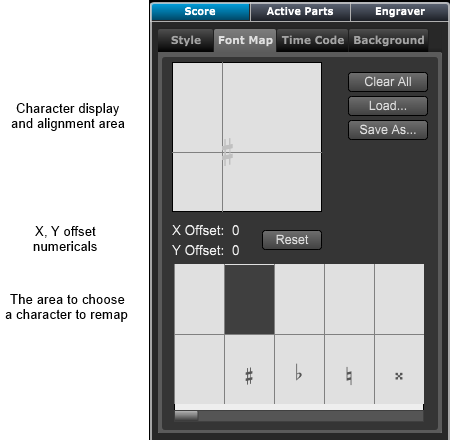
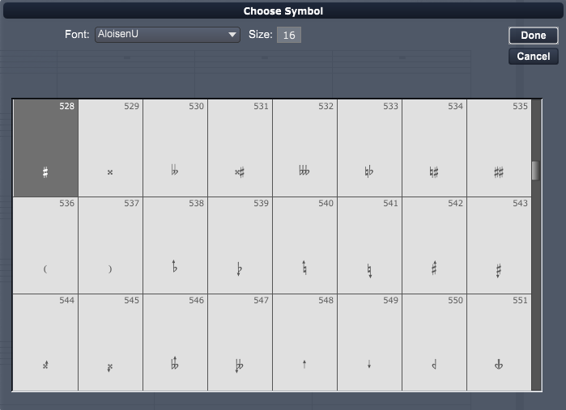

Score Panel - Font Map Section
Score Panel - Font Map Section
If the Score Layout panel is not showing click on the Layout button at top right of Control Bar or type "Shift-L" to open the panel.
Then choose the Score panel.
If necessary click on the Font Map tab to display the font map settings.

Choose this section to map music font characters using another font. You can substitute individual symbols or the
entire set of symbols in the font.
The following section describes the elements of the Music Font Map dialog box and how they work together.
You can use the mapping feature two ways:
To replace chosen symbols in your score with symbols from another music font:

The Music Font Map dialog box has a placement feature to help you get precise spacing for substituted symbols.
To place a mapped font symbol precisely:
To cause your score to revert to its last saved symbol press the Clear All button.
Individual character remapping can be cleared by selecting the symbol and pressing the delete key.
You can save your font mappings as a library that can be loaded later. To do so, in the Music Font Map dialog box, click Save.
If you are saving this font mapping for the first time, Overture displays a normal Save As dialog box. Choose a name and click OK.
Overture saves to the libraries folder unless you specify otherwise.
Overture saves your font map automatically when you save your score.
Once you have created and saved a font map, you can reload it from the libraries folder. To do so, in the Music Font Map dialog box, click Load.
Overture displays a browser. Locate the font map you want. Click Open. Overture loads the font map library you specify.